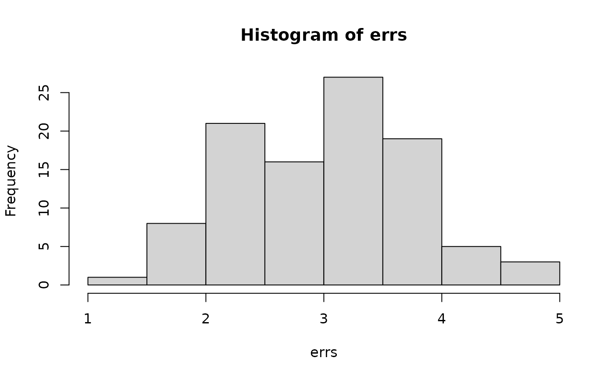

crossv_kfold splits the data into k exclusive partitions,
and uses each partition for a test-training split. crossv_mc
generates n random partitions, holding out test of the
data for training. crossv_loo performs leave-one-out
cross-validation, i.e., n = nrow(data) training partitions containing
n - 1 rows each.
crossv_mc(data, n, test = 0.2, id = ".id") crossv_kfold(data, k = 5, id = ".id") crossv_loo(data, id = ".id")
| data | A data frame |
|---|---|
| n | Number of test-training pairs to generate (an integer). |
| test | Proportion of observations that should be held out for testing (a double). |
| id | Name of variable that gives each model a unique integer id. |
| k | Number of folds (an integer). |
A data frame with columns test, train, and .id.
test and train are list-columns containing resample() objects.
The number of rows is n for crossv_mc(), k for crossv_kfold()
and nrow(data) for crossv_loo().
cv1 <- crossv_kfold(mtcars, 5) cv1#> # A tibble: 5 x 3 #> train test .id #> <named list> <named list> <chr> #> 1 <resample> <resample> 1 #> 2 <resample> <resample> 2 #> 3 <resample> <resample> 3 #> 4 <resample> <resample> 4 #> 5 <resample> <resample> 5library(purrr) cv2 <- crossv_mc(mtcars, 100) models <- map(cv2$train, ~ lm(mpg ~ wt, data = .)) errs <- map2_dbl(models, cv2$test, rmse) hist(errs)